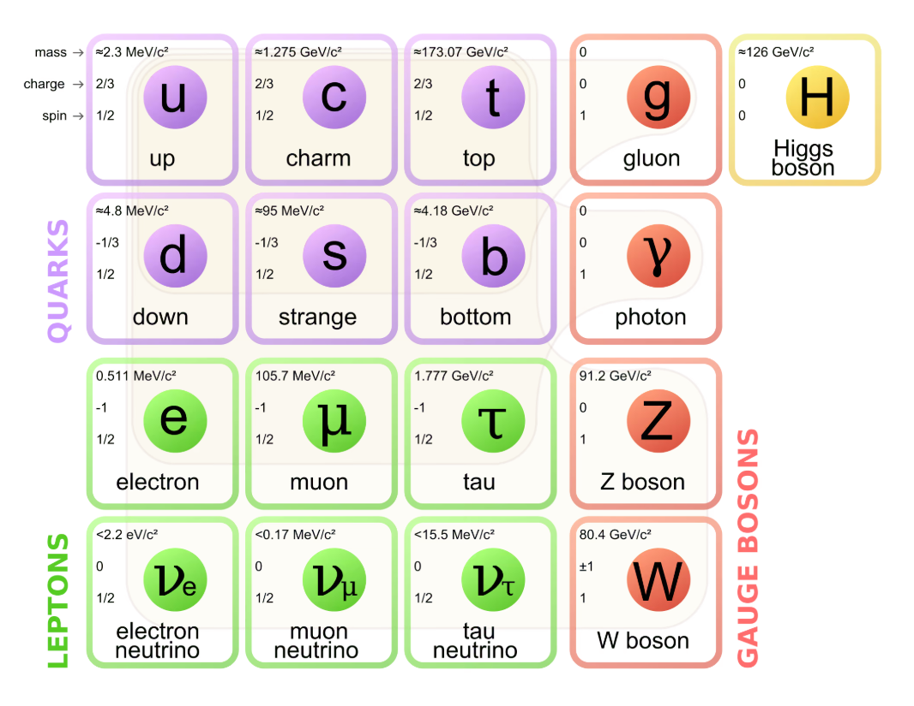

Notatki z pliku notes/ceio/ceio_0000.00.00.md
Cząstki ELementarne i Oddziaływania¶
Notatki z pliku notes/ceio/ceio_2026.06.20.md
Powtórka przed egzaminem¶
Wykłąd 1¶

Podział cząstek¶
Do kwarków i leptonów istnieją antycząstki (antykwarki, pozytrony, anty-muony, e.t.c.).
Wskazówka
Używamy jednostek naturalnych (\(c=1 ~ h = 1\))
Cząstki oddziaływują ze sobą przez tzw. Cząstki Wirtualne.
Czteropęd
Czteropęd definiujemy jako:
Ważne, że \(P^2 \equiv m^2\)
Metryka czterowektorów:
Informacja
Rozważamy przejście \(A(m_A, 0) \to A(E_A, \vec{p_A}) + X(E_X, \vec{p_X})\) Chcemy wyznaczyć różnićę energii \(\Delta E = E_2 - E_1\) (gdzie \(E_1 = m_A\) a \(E_2 = E_A + E_X\))
Można zapisać, że:
więc:
na przykłąd dla \(p = p_A = p_X \to 0 ~ \Delta E \to m_X\).
Czas życia cząstki wirtualnej (odpowiedzialnej za oddziaływanie) wynosi \(\tau <= \frac{1}{\Delta E} = \frac{1}{m_X}\).
Zasięg oddziaływania można zdefiniować jako odległość jaką cząstka przebędzie w trakcie czasu życia \(R = \frac{1}{m_X}\) (Tak możńa bo robimy naturalne jednostki).
Wskazówka
Przykłądowo dla oddziaływania EM zasięg jest nieskończony, a cząstką pośredniczącą (wirtualną jest foton), stąd można zauważyć, że: \(R\to \infty \Rightarrow m_\gamma \to 0\)
Wykłąd 2¶
Czterowektory (przykłady):
położenia \(x^\mu = (t,x,y,z)\)
energii-pędu \(P^\mu = (t, \vec{p})\)
Potencjału \(A^\mu = (\phi, \vec{A})\)
gęstości prądu \(j^\mu = (\rho, \vec{J})\)
Transformacje Lorentza czterowektorów
Wyróżniamy dwa typy cząstek:
rzeczywiste (\(m^2>0 ~ v < c\)). Mają czterowektory czasopodobne
wirtualne (\(m^2 < 0\)). Mają czterowektory przestrzennopodobne
Wskazówka
Cząstka relatywistyczna to taka, gdzie \(|E-m| \gg m\). Wtedy do obliczeń można przyjąć, że \(m \sim 0 \Rightarrow E = p\)
Ukłąd środka masy to taki, w którym suma pędów wszystkich cząstek wynosi 0
Z tego faktu wynikają oczywiste rzeczy (np, że \(m = \sum_i E^*_i\)) gdzie \(E^*_i\) to energia i-tej cząstki w ukłądzie środka masy.
Układ laboratoryjny to ukłąd, w którym jedna z cząstek (zwana tarczą) spoczywa (\(\vec{p_2} = 0\)).
Rozpady: Masa rozpadającej się cząstki jest równa masie niezmienniczej tych co wypadają (trywialne).
Przekrój czynny to miara prawdopodobieńśtwa zajścia procesu.
gdzie:
\(R\) - ilość obserwowanych rozpadów w jednostce czasu
\(\sigma\) - przekrój czynny
\(L\) - świetlność - liczba wiązek cząstki na jednostkę czasu na jednostkę powierzchni.
Jednostka: \(1 barn = 10^{-28} m^2\)
Rozpady: (wiadomo co to rozpad chyba, nie?)
Mamy parametry typu średni czas życia, prawdopodobieńśtwo rozpadu e.t.c.).
Można mówić o Decay Rate czyli p-stwo na jednostkę czasu że isę rozpadnie \(\Gamma\).
Branching ratio
No jak cząstka rozpada się na różne sposoby, to można policzć jaka cześć rozpadnie sie rozpadem \(i\):
Wykład 3¶
Zderzenia: (definicja jest trywialna)
Złota reguła fermiego
Pozwala na wyliczenie:
gdzie:
\(i\) oraz \(f\) to stany końcowy i początkowy
\(|T_{fi}|^2\) to amplituda przejścia. Im większa, tym częstsze przejście
\(\rho(E_i)\) degeneracja stanu końcowego - ile stanów o tej samej energii
Równanie Schrödingera: mamy funkcje falową \(\Psi\) która zawiera info o pędzie i energii stanu (\(\ket\Psi\))
Możemy zdefiniować operatory do “wyciągania” informacji z funkcji falowej
\(\hat{P} = - i \nabla\)
\(\hat{E} = i \frac{\partial}{\partial t}\)
Wartości własne operatora dają nam wyniki pomiaru (trywialne, po prostu mądrze powiedziane że zadziałanie operatorem na \(\Psi\) daje to co chcemy razy \(\Psi\))
Są też napisane trywialne rzeczy na tym slajdzie to ich nie przepisuje.
A no i funfact: Hamiltonian nie zależy od czasu (więc jest zachowany - energia jest zachowana). A wszystko co komutuje z hamiltonianem to też jest zachowane. Pozdro.
Równanie Kleina-Gordona - Chodzi o to żeby równanie Schrödingera było niezmiennicze lorentzowsko (relatywistyczne).
Bierzemy niezmiennik relatywistyczny:
Podstawiamy jawne postacie operatorów i mnożymy przez \(\ket\Psi\)
Mamy równanie K-G. Daje ono czasem niefizyczne wyniki (ujemne energie i gęstości prawdopodobieństwa).
Rozwiązaniem części przestrzennej jest potencjał Yukawy.
Równanie Diraca Działa jak równanie Schroödingera, ale achowuje niezmienniczość względem transformacji Lorentza
Można zapamiętać, że R. Diraca jest pierwiastkiem z K-G:
gdzie: \(\gamma\) jest odpowiednią macierzą (tak jak na teoretycznej).
Równanie Diraca pozwoliło przewidzieć istnienie pozytronu. (taki funfact)
Wykład 4¶
Najpierw są omówione diagramy feymana, ale to w miare oczywiste więc skip.
Potem wymieniamy wyższe poprawki dla pomiaru energii elektronu (?). Chodzi o to , że elektron potrafi wyemitować foton, który potem sobie tworzy pare elektron,pozytron, anichiluje i robi dalej co miał robić, albo tworzy takie pary kilka razy.
Stosuje się wtedy tak zwaną renormalizacje (czyli odejmujemy od sumy możliwych diagramów feymana danego przejścia sume 2wszystkich przejść w chmurze cząstek wirtualnych, w efekcie dostajemy \(\infty - \infty\) i dostajemy skończoną wartość.).
Ceną za renormalizacje jest uzależnienie pomairu energiii od przenoszonego czteropędu \(P^2\). (czyli np. \(e_0 \to e_0(P^2)\)).
UWzględnia się następująće poprawki:
polaryzacja próżni (emisja par proadzi do ekranowania łądunku)
renormalizacja masy (sama energia elektronu fluktuuje)
anomalie momentu magnetycznego (zmiana ładunk ma wpływ na moment magnetyczny)
Wykłąd 6¶
Akceleratory przyśpieszają cząstki.
Można albo zderzać cząstki ze sobą albo z tarczą.
Świetlność decyduje o jakości akcleratora
istnieją 2 typy akceleratoróœ:
liniowe (faza wstępna, dowalamy duże napięcie i lecimyyyyy)
kołowe (Pole magnetyczne używane do zakręcania, elektryczne do przyspieszania) \(\omega = \frac{e B}{m \gamma}\)